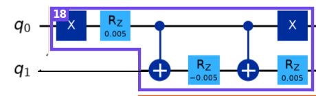

Learn · hadron circuit · brickwork, part 3
Brick 18 worked by hand on two qubits. States are written |q0 q1⟩.

Brick 18 from brickwork_annotated.png.
In order: X(q0), Rz(θ)(q0), CX(q0 → q1), Rz(−θ)(q1), CX(q0 → q1), X(q0), Rz(θ)(q1). 2 CNOTs. Here θ = 0.005 (earlier circuit); 0.113 in the newer files.
| gate | state |
|---|---|
| start | |00⟩ |
| X on q0 | |10⟩ |
| Rz(θ) on q0 | eiθ/2|10⟩ |
| CX (q0 → q1) | eiθ/2|11⟩ |
| Rz(−θ) on q1 | |11⟩ (phases cancel) |
| CX (q0 → q1) | |10⟩ |
| X on q0 | |00⟩ |
| Rz(θ) on q1 | e−iθ/2|00⟩ |
The bits come back unchanged; only a phase was added.
| input |q0 q1⟩ | output |
|---|---|
| |00⟩ | e−iθ/2 |00⟩ |
| |01⟩ | e+3iθ/2 |01⟩ |
| |10⟩ | e−iθ/2 |10⟩ |
| |11⟩ | e−iθ/2 |11⟩ |
Checked by computer: the gate is diagonal (no bit ever changes).
No factoring needed: in every term, look at the (q0, q1) bits and multiply by the matching phase; q2, q3 ride along. On the state after the SWAP:
cos²θ' e^(−iθ/2) |0011⟩ − i sinθ' cosθ' e^(+3iθ/2) |0110⟩ − i sinθ' cosθ' e^(−iθ/2) |1001⟩ − sin²θ' e^(−iθ/2) |1100⟩
θ' = −0.15 is the pair-gate angle; θ is the electric angle. Only the |0110⟩ term (q0 q1 = 01) picks up the different phase.